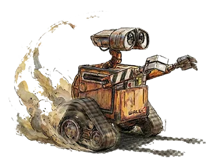
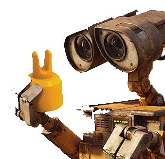
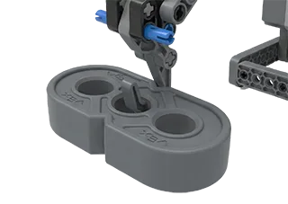
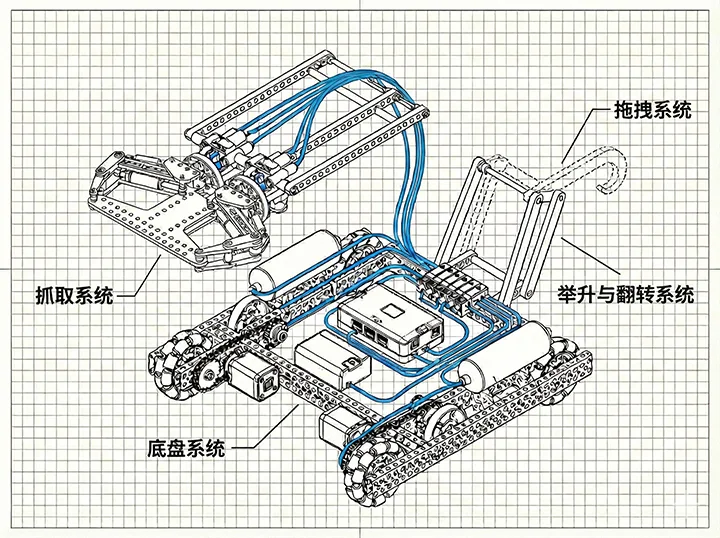
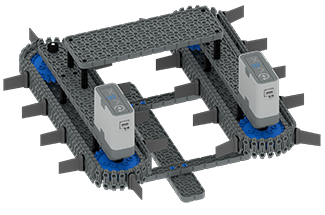
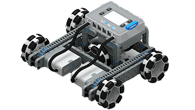
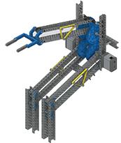
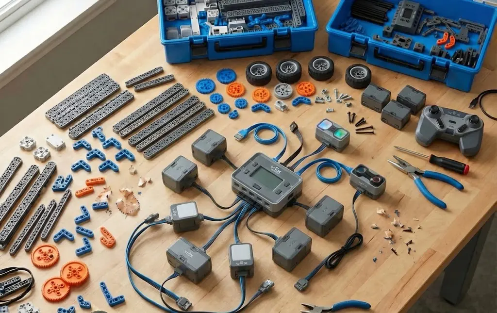

This chapter records team 2276A's deep analysis and concept design process based on the 2025-2026 VEX IQ Mix & Match rules.
Starting from competition requirements, we'll break down the robot's core modules, compare mechanical options, and finalize the blueprint for our "Gen 1" robot.
Core Task: Establish the design blueprint and technical route for the Gen 1 robot.
By studying the "Game Manual" and watching official demos, we analyzed the scoring mechanisms. To maximize efficiency, we summarized 6 core functions our robot must have:



Design Constraints: All functions must fit within the size limit (11"x20"x15"), stay within the 12-port limit of the Brain, and follow pneumatic usage rules.
Based on our needs, we divided the Gen 1 robot into four independent subsystems that work together:

| Subsystem | Power Source | Design Consideration |
|---|---|---|
| Chassis | 2 x Smart Motors | Differential drive for balance of speed and power. |
| Lift | 1 x Smart Motor | Linkage drive with rubber band gravity compensation. |
| Flip | 1 x Smart Motor | 180-degree wrist rotation for reverse stacking. |
| Intake | Pneumatic System | Uses cylinders to save motors and provide instant grip force. |
During the early design phase, we proposed several mechanical structures. We evaluated them based on feasibility, complexity, and resource usage.
Description: Using high-speed flexible rollers to "suck" Pins into the robot.

Reason for Elimination: 1. Pin shape is irregular; it's hard to control final orientation for precise stacking. 2. Mechanism is too bulky to integrate a flip system within the size limits.
Description: Adding a sideways wheel to a 4-wheel chassis for omnidirectional movement.

Reason for Elimination: 1. Needs 3-5 motors, exceeding our motor budget. 2. Sideways wheels have poor traction on VEX IQ field tiles and lose pushing power.
Description: A high-reach scissor or multi-linkage lift structure.

Reason for Elimination: 1. Too heavy, making the center of gravity too high and prone to tipping. 2. Gen 1 principle is "Stability First"—DR4B is just too complex for now.
After many rounds of discussion, we finalized the Gen 1 design. This plan focuses on simple, reliable hardware to ensure core scoring functions.
Classic left-right motor drive with 4 Omni Wheels to reduce turning friction. We're using a 2x speed gear ratio (48:24) for a balance of speed and pushing power.
Using pneumatics for instant response, we designed an L-shaped claw. It closes to grab when the cylinder extends and opens when it retracts. This saves motor ports and provides constant grip.
A single-driven four-bar linkage with rubber band compensation. This reach is enough for stacking Pins two layers high.
Integrated flip motor at the end of the arm to switch the grabber between 0-180 degrees, enabling reverse stacking.
While finalizing hardware, we also planned our initial match strategy to guide our building and programming.
This chapter took us from requirement analysis to final design.
By dissecting the rules, we defined the boundaries of our robot's functions. With limited resources, we made rational choices, rejecting risky complex structures in favor of a "Stable Chassis + Efficient Pneumatic Claw" route.
This design theoretically meets all our core needs for movement, grabbing, stacking, and flipping, and it has high feasibility.
Next, we move into manufacturing and debugging to see how this concept performs in the physical world!
